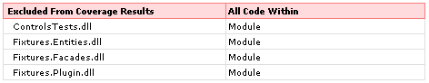

On a recent project, my team was set the task of achieving 100% unit test pass-rate and code coverage. If you've ever been in this position, you'll know it's a double-edged sword - whilst it's great when the Powers That Be embrace quality instead of fixating, limpet-like, on the next deadline, it can be a nightmare when that percentage figure on the weekly summary becomes the new focus for managerial concentration, especially given how difficult it can be to hit 100%.
The problem is that achieving the magical 100% is, in many cases, neither practical nor particularly useful. It can even be a problem, if the warm fuzzy feeling you get when you see "Coverage: 100%" leads to complacency. Even with 100% coverage and pass-rate, you don't necessarily have quality software.
Our high-level project architecture involved a .Net client talking to a suite of web services written in Java. The .Net client, as an application with a GUI and a web service proxy, contained a great deal of generated code and was my main concern when the targets were set.
Now, it's my belief that in most cases there's no benefit to writing tests for generated code (unless you also wrote the generator). Unless you have a very, very good reason not to, you should trust that the tools are doing their job and generating sane code. That's what they're there for. If the tools are flaky, you probably shouldn't use them at all - though I suppose that if you sometimes fell foul of a particular bug you could write a test to detect it1.
The cause of my concern was that the UI and web reference code accounted for about 30-35% of the SLOC in the application, and so any coverage report that covered the whole app would be way short of the targets we were set. There are a number of ways to deal with this:
-
Bite the bullet and write tests for everything. That includes InitializeComponent(), drag 'n' drop handlers, and the sync and async versions of every web service stub. Best of luck, and see you in 20172.
-
Explain patiently that some code does not need testing (or at least, is on the wrong side of the productivity bell curve and subject to massively diminishing returns in terms of effort/value). Of course, then you'll be asked to prove that you're not pulling a fast one and that the delta of your target and actual coverage percentage can be accounted for entirely by generated code. This will be tricky if you count SLOC for the generated code and use decision points for your test coverage, and maintaining this is another administrative task that you probably don't want to do.
-
Separate your code such that some assemblies contain only generated code, and the rest contain only business logic. Then exclude the former from your test suite so they don't show on the coverage report. This is probably achievable, though it can lead to some fairly hideous contortions to maintain the boundary, and can even result in sensible design decisions being discarded in favour of wacky ones that have no redeeming feature other than supporting your arbitrary separation rules.
-
Swear indiscriminately and refuse. Then clear your desk, probably.
None of those appealed, so we set out to find another approach. What we wanted was a more flexible variant of option 3, where we could exclude methods or classes without having to exclude the whole assembly. If we could exclude code at a fairly granular level, then it became both more realistic and useful to aim for 100% coverage of our actual business code.
It turns out that code exclusion isn't so tough - NCover will ignore methods and classes tagged with an attribute named CoverageExclude in the global namespace3.
This still requires a little discipline - for example making sure that if Joe marks a class as excluded, Jim doesn't add some business logic to that class a week later without removing the attribute - but nothing that can't easily be dealt with in regular code reviews.
The Powers That Be are wily, alas, and when we pitched the idea to them they approved in principle but were wary of allowing bits of code to be arbitrarily dropped off the coverage reports. If a class was excluded, who excluded it and why?
This seemed reasonable for accountability - the information would be available in the source check-in notes, but that's a bit fiddly since you don't know when the attribute was added; our source control system doesn't have anything analogous to subversion's 'blame' so you have to go rummaging through a potentially very long version history. A better solution would be to find a way to add the information directly to the coverage report, so that it's right there for all to see. So, how?
The first step was to get the appropriate metadata into the code. The reference implementation for the CoverageExclude attribute is as follows:
public class CoverageExcludeAttribute : Attribute { }
We wanted to capture additional information when the attribute was used, however, so we added a couple of read-only properties and did away with the default constructor.
public class CoverageExcludeAttribute : Attribute
{
private string m_author;
private string m_reason;
public CoverageExcludeAttribute(string reason,
string author)
{
this.m_reason = reason;
this.m_author = author;
}
public string Author
{
get { return this.m_author; }
}
public string Reason
{
get { return this.m_reason; }
}
}
Now, when anyone uses the attribute, the compiler forces them to add some additional data.
[CoverageExclude("John Q Dev", "No testable code here, buster")]
public void MethodToBeExcluded(int x, int y)
{
// ...
}
NCover can be told to pay attention to this attribute with the excludeAttributes parameter, as explained here.
With the easy bit out of the way, the next task was to report on these exclusions. Our build system, after running the test suite, used NCoverExplorer to generate a summary report. You can tell NCoverExplorer to list exclusions in reports, so we figured that would be a good place to start. The appropriate NAnt incantation is:
<ncoverexplorer failonerror="false"
program="C:\NCoverExplorer\NCoverExplorer.Console.exe"
projectName="Atmosphere Processor::LV426"
reportType="4"
xmlReportName="Report.xml"
mergeFileName="CoverageMerge.xml"
showExcluded="True"
satisfactoryCoverage="80">
<fileset>
<include name="Coverage.xml"/>
</fileset>
<exclusions>
<exclusion type="Assembly" pattern="*Tests" />
<exclusion type="Assembly" pattern="*Fixtures*" />
</exclusions>
</ncoverexplorer>
Note the reportType and showExcluded attributes, which specify the summary report we want, with details of excluded code appended to the report. Note also the exclusion nodes, which specify that we want our test assemblies excluded from coverage metrics. The report will include a table like this:

Our goal was to somehow get our custom properties (Author and Reason) into this report. To do so, firstly we needed to modify the above table with two extra columns to hold this custom data. NCoverExplorer ships with stylesheet called CoverageReport.xsl; the table modification was achieved by tweaking the 'exclusions summary' section as follows:
<!-- Exclusions Summary -->
<xsl:template name="exclusionsSummary">
<tr>
<td colspan="5"> </td>
</tr>
<tr>
<td class="exclusionTable mainTableHeaderLeft" colspan="1">
Excluded From Coverage Results</td>
<td class="exclusionTable mainTableGraphHeader" colspan="1">
All Code Within</td>
<td class="exclusionTable mainTableGraphHeader" colspan="2">
Reason For Exclusion</td>
<td class="exclusionTable mainTableGraphHeader" colspan="1">
Developer</td>
</tr>
<xsl:for-each select="./exclusions/exclusion">
<tr>
<td class="mainTableCellBottom exclusionTableCellItem" colspan="1">
<xsl:value-of select="@name" /></td>
<td class="mainTableCellBottom mainTableCellGraph" colspan="1">
<xsl:value-of select="@category" /></td>
<td class="mainTableCellBottom mainTableCellGraph" colspan="2">
<xsl:value-of select="@reason" /></td>
<td class="mainTableCellBottom mainTableCellGraph" colspan="1">
<xsl:value-of select="@author" /></td>
</tr>
</xsl:for-each>
</xsl:template>
The next step was to actually inject our custom data into the report. This was a two-stage process:
-
Use reflection to iterate through the application assemblies, looking for anything tagged with our attribute
-
Open the report data file generated by NCoverExplorer and shoehorn our new data into it.
We created a simple little post-processor application to perform this work. To complete stage 1, we needed to iterate through a directory of assemblies, loading each one in turn. In each assembly, we iterated through the types contained therein, and looked for our custom attribute on each one. Then, we iterated through the methods on each type, and looked for the custom attribute there too. This is actually very simple - the code skeleton looks like this:
foreach (FileInfo assemblyFile in assemblies)
{
try
{
// Attempt to load the file as an assembly, and grab
// all the types defined therein
Assembly assembly = Assembly.LoadFrom(assemblyFile.FullName);
Type[] types = assembly.GetTypes();
// Spin through the types, looking for classes and
// methods tagged with CoverageExclude
foreach (Type type in types)
{
object[] classAttributes = type.GetCustomAttributes(
typeof(CoverageExcludeAttribute), false);
foreach (CoverageExcludeAttribute classAttribute in classAttributes)
{
// ...
}
MethodInfo[] methods = type.GetMethods(
BindingFlags.Public |
BindingFlags.NonPublic |
BindingFlags.Instance |
BindingFlags.Static);
foreach (MethodInfo method in methods)
{
object[] methodAttributes =
method.GetCustomAttributes(
typeof(CoverageExcludeAttribute), false);
foreach (CoverageExcludeAttribute methodAttribute
in methodAttributes)
{
// ...
}
}
}
}
catch (Exception ex)
{
// Probably not a .Net assembly, do some appropriate
// complaining to the user
}
}
In the loops, we cached the fully-qualified names of the types and methods tagged with the attribute.
Stage 2 was implemented by tweaking the XML data file NCoverExplorer generates for the report. This is straightforward too - suck the report into an XmlDocument, grab the exclusion nodes, and add a couple of attributes to each one. All the types and methods were already listed since we'd set the excludeAttributes parameter in the NAnt configuration (see above).
Therefore, all we needed to do was match up the FQNs we cached in stage 1 with the nodes already in the report:
XmlDocument doc = new XmlDocument();
doc.Load(coverageFile.FullName);
// Go through all the exclusion nodes and try to match
// them up against the exclusion data we have sucked
// out of the assemblies
foreach (XmlNode node in doc.SelectNodes("//exclusion"))
{
switch (node.Attributes["category"].Value)
{
case "Class":
// Find and remove the first exclusion reason for
// this class
FindExclusionAndModifyNode(exclusions.ClassExclusions,
node);
break;
case "Method":
// Find and remove the first exclusion reason for
// this method
FindExclusionAndModifyNode(exclusions.MethodExclusions,
node);
break;
default:
// Exclusion at either assembly or namespace level
break;
}
}
The implementation of FindExclusionAndModifyNode simply loops through the cached FQNs to see if we have data that corresponds to the current node, and if so it creates two new attributes - one containing the name of the developer that added the CoverageExcludeAttribute to the code, and another containing their justification for doing so. Then the modified XmlDocument is written out to disk, overriding the original.
The end result is a report that looks something like this, with all the excluded code neatly documented to keep suspicious managers happy.
Since the post-processor was written as a simple command-line application, we could create a custom NAnt task for it and integrate the whole process seamlessly with our continuous integration setup.
-
I've seen it happen a few times before, for example an XML generator (which shall remain nameless) that occasionally 'forgot' our custom namespace and used a default, which caused parsers of that XML to scream in agony. It's rare though, unless you regularly dig up tools from CodeProject and use them in your production code, in which case you deserve everything you get ;-) ↩
-
Written in 2008. So if you're reading this on December 31st 2016, adjust accordingly and don't come crying to me. ↩
-
Yes, I know that NCover 2.x has built-in regex-based exclusions that do all this, but a) not everyone has an NCover 2.x pro licence, and b) we weren't using NCover 2.x as it hadn't been released at the time. ↩
I will be working at the NCover booth. Finally, I got a lot information with your posting.
hey, i m using Ncover 1.5.8 version. can u please tell me where to excude the code coverage at namespace level and assembly level.
clearly, where to exclude the asembly name.. pls give the path! Thanks in advance